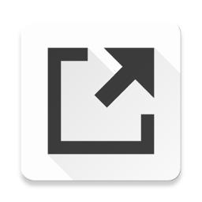

Apps
Bookmarks
Downloads
History
Extensions
Flags
Simple Material New Tab
Customization
Toggle Shortcuts
Select which shortcuts will be visible in top-right corner:
Apps
Bookmarks
Downloads
History
Extensions
Flags
Color theme
Select a color theme for the extension:

Simple Material New Tab
Simple Material New Tab extension for Chrome that replaces default Chrome new tab page with one that shows
you your Bookmarks, Apps and provides easy access to many Chrome features.
Ok